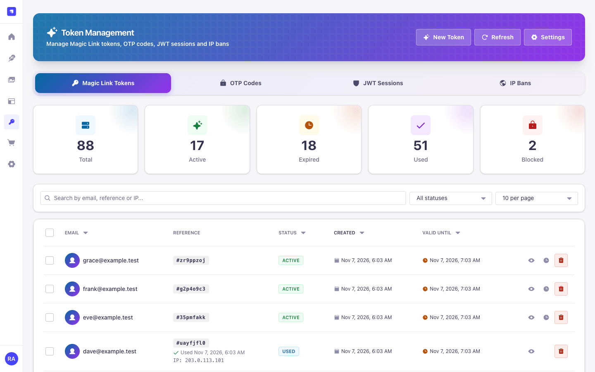
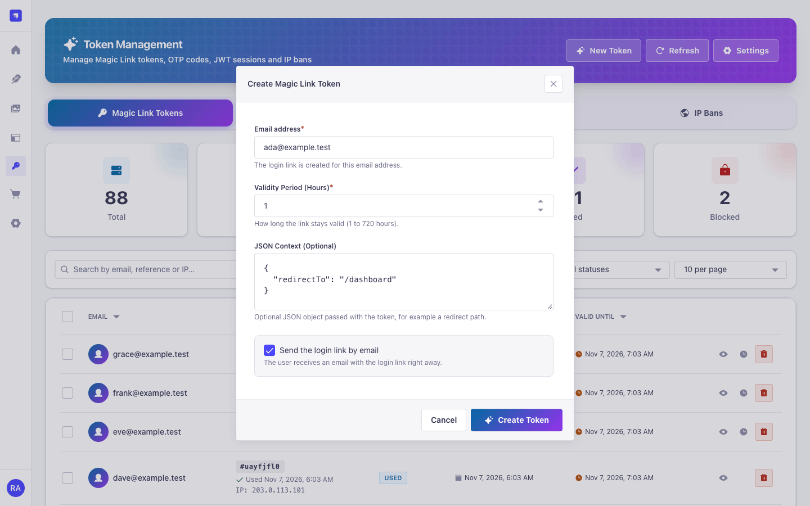
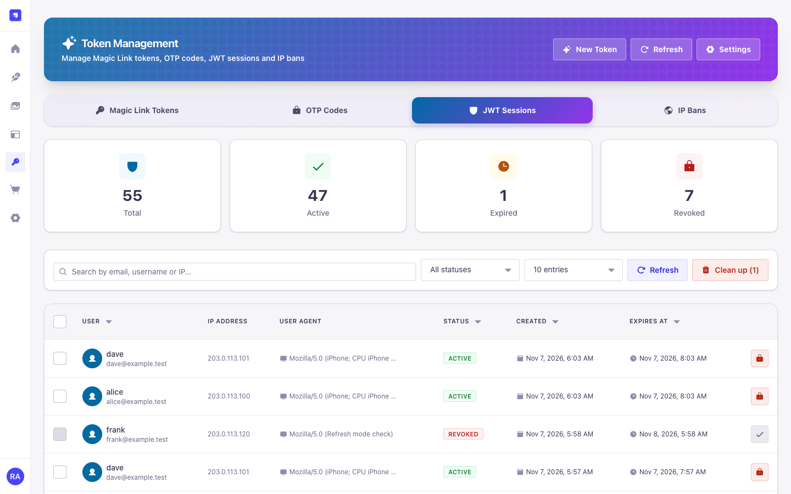
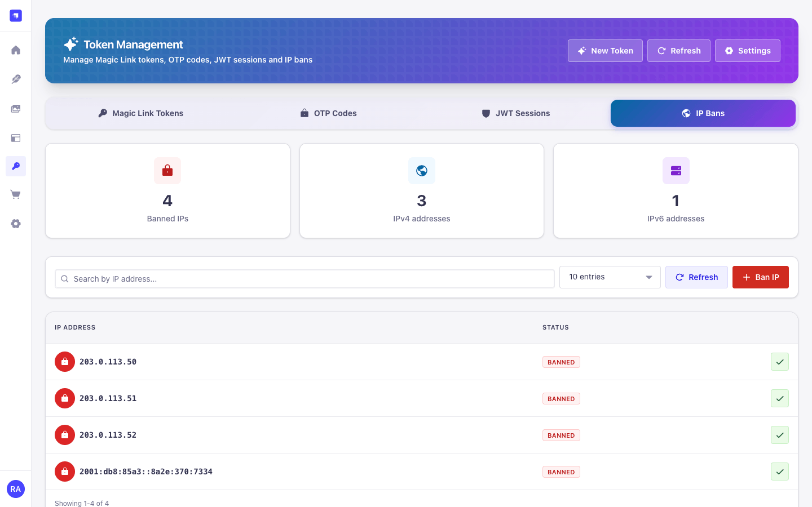
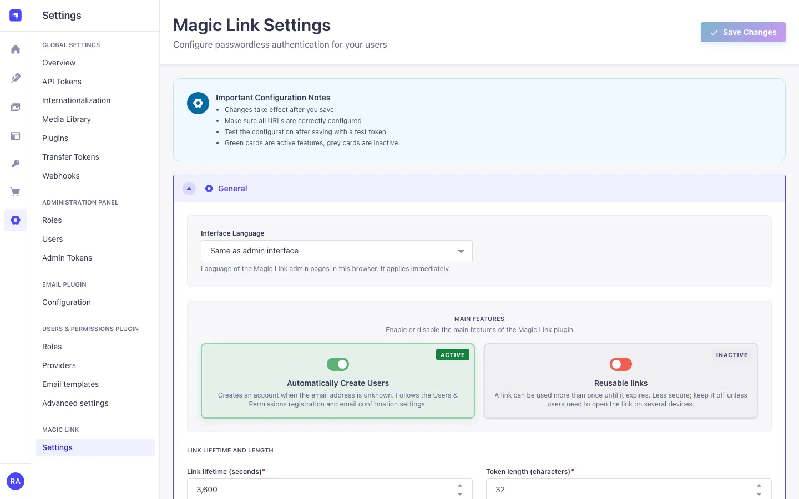
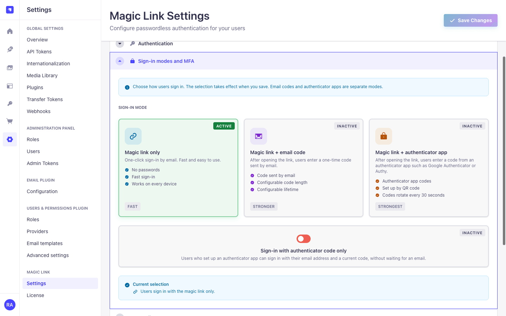
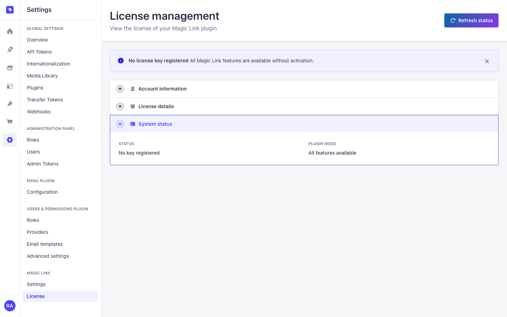
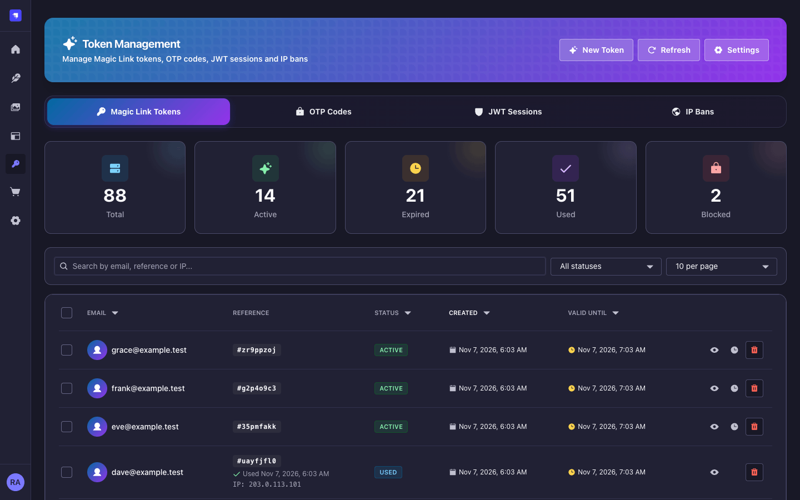
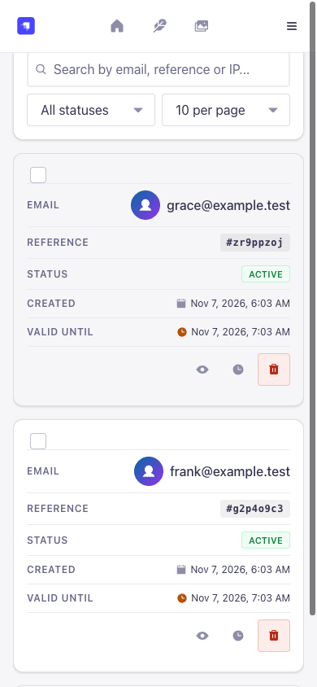
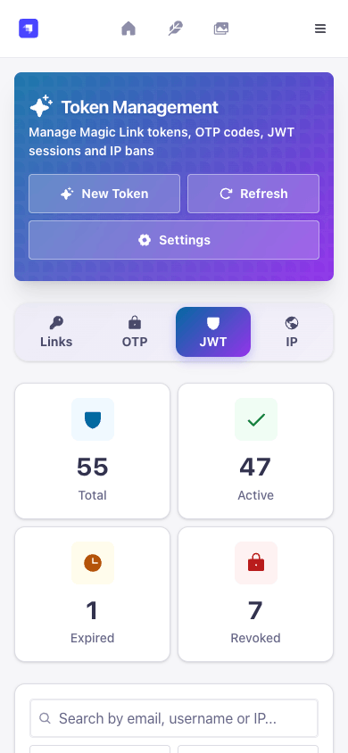

Magic links by e-mail
Hashed, expiring, single-use links sent through your Strapi e-mail provider, Magic Mail or Email Designer 5. The request never reveals whether an account exists.
Strapi 5 plugin · Node.js 22 to 26 · MIT
Users enter their e-mail address, click the link and get a normal Users & Permissions session. Add an e-mailed one-time code (OTP) or an authenticator app (TOTP) as a second factor when you need MFA.
Passwordless authentication by e-mail, optional second factors and an admin panel for tokens, sessions and IP bans.
Your app calls POST /send-link with an e-mail address.
The user opens the link; your landing page posts the token to Strapi.
Strapi answers with a JWT, or first asks for an OTP or TOTP code.
Hashed, expiring, single-use links sent through your Strapi e-mail provider, Magic Mail or Email Designer 5. The request never reveals whether an account exists.
Ask for a one-time code from a second e-mail after the link click. Attempts are limited and counted atomically.
Optional or required authenticator apps. Users can enrol during sign-in or later from their account, and use one-time backup codes.
Works with Users & Permissions in legacy JWT mode and in refresh mode, where
logins return a refresh token like /api/auth/local.
Tokens, OTP codes, JWT sessions, IP bans, settings and license, in five languages, light and dark mode, with read and manage permissions.
A compatibility mode keeps /api/passwordless/* calls from
strapi-plugin-passwordless working while you switch.
The admin panel follows the Strapi design system, in light and dark mode and on small screens. All screenshots use synthetic data.










Requires Strapi 5.24 or newer and Node.js 22 to 26.
Install the package.
npm install strapi-plugin-magic-link-v5Set two secrets of at least 32 characters. The plugin does not start without them.
# node -e "console.log(require('crypto').randomBytes(32).toString('hex'))"
MAGIC_LINK_ENCRYPTION_KEY=...
MAGIC_LINK_OTP_PEPPER=...
Configure a Strapi e-mail provider, run npm run build and start
Strapi.
In Settings → Magic Link → Settings → General, set the frontend base URL and login path of your landing page.
Send the first link.
curl -X POST https://api.example.com/api/magic-link/send-link \
-H 'Content-Type: application/json' \
-d '{"email":"ada@example.com"}'Everything is set in Settings → Magic Link → Settings: link lifetime and length, where links point, sender and templates, auto-registration, rate limits and the sign-in mode.
| Mode | Setting | After the link click |
|---|---|---|
| Link only | default | The user is signed in |
| Link + e-mail OTP | otp_enabled |
A code from a second e-mail |
| Link + TOTP (optional MFA) | mfa_mode: optional |
A code from the app if the user enrolled |
| Link + TOTP (required MFA) | mfa_mode: required |
A code from the app; enrolment on the spot if needed |
| TOTP only | totp_as_primary_auth |
No e-mail: POST /login-totp |
| Key | Default | Meaning |
|---|---|---|
frontend_url, frontend_login_path |
empty, /auth/magic-link |
Your landing page (https; http only for localhost) |
expire_period |
3600 |
Link lifetime in seconds |
stays_valid |
false |
Allow a link to be used more than once until it expires |
jwt_token_expires_in |
30d |
JWT lifetime in legacy mode |
rate_limit_max_attempts, rate_limit_window_minutes
|
5, 15 |
Requests per IP and per address in the window |
createUserIfNotExists +
allow_magic_links_on_public_registration
|
true, false |
Create accounts on first login (also needs users-permissions sign-ups) |
module.exports = () => ({
'magic-link': {
config: {
// Login links may only point at these origins.
allowedLinkOrigins: ['https://app.example.com'],
// Shared rate limits for several instances.
rateLimit: { redis: { storeClient: redisClient, useRedisPackage: true } },
// No calls to the license server.
license: { remoteLookup: false },
},
},
});
Required environment: MAGIC_LINK_ENCRYPTION_KEY (AES-256-GCM key for TOTP
secrets) and MAGIC_LINK_OTP_PEPPER (keys the OTP and backup-code hashes).
MAGIC_LINK_ENCRYPTION_KEY_PREVIOUS rotates the key at the next start.
E-mail templates use placeholders such as {{LOGIN_URL}},
{{EXPIRY_TEXT}} and {{USER}}. Values are HTML-escaped and no
template code runs. With jwtManagement: 'refresh' in Users &
Permissions, logins return a refresh token and use the native session store.
Behind a reverse proxy, set proxy: { koa: true, maxIpsCount: 1 } in
config/server.js so rate limits and IP bans see the real client address.
What is protected, and how.
At least 132 bits, stored salted and hashed, expiring. A single-use link is consumed with a conditional update, so parallel clicks give one session.
send-link answers before any lookup or delivery, with the same body
and timing for every address.
Challenge state lives on the server. OTP attempts are counted before the comparison, TOTP codes cannot be replayed, and code checks are limited to 10 per account and 15 minutes even with rate limiting off.
Revoked JWTs stay blocked until they expire. In refresh mode a revocation ends the whole users-permissions refresh family, rotated tokens included.
Confirming an unconfirmed account by link, OTP or enrolment first ends its sessions and clears a password someone else may have set.
Every admin route checks a permission on the server. Impersonation
(tokens.issue) and settings that redirect links
(settings.security) have their own permissions.
Known limits: MFA covers the Magic Link login paths only, so disable password or social logins you do not use. In a cluster, two admins writing the session, block or ban list at the same moment on different instances can lose one change.
Plugin logs contain no e-mail addresses, tokens or login URLs. Report vulnerabilities privately through GitHub security advisories.
Public routes are mounted under /api/magic-link. Your landing page
receives ?loginToken= and exchanges it with a POST, so the token stays
out of access logs and Referer headers.
const loginToken = new URLSearchParams(location.search).get('loginToken');
const res = await fetch('/api/magic-link/login', {
method: 'POST',
headers: { 'Content-Type': 'application/json' },
body: JSON.stringify({ loginToken }),
});
const result = await res.json();
// result.jwt, or result.requiresOTP / requiresTOTP / requiresTOTPSetup| Method | Path | Purpose |
|---|---|---|
| POST | /send-link |
Send a magic link to { email } |
| POST | /login |
Exchange { loginToken } (GET kept for compatibility) |
| POST |
/otp/send, /otp/resend, /otp/verify
|
E-mail OTP step |
| POST | /verify-mfa-totp |
TOTP or backup code after the link |
| POST | /totp/enroll, /totp/enroll/confirm |
Enrol an authenticator during a required-MFA login |
| GET, POST |
/totp/status, /totp/setup,
/totp/confirm, /totp/disable,
/totp/backup-codes
|
Self-service for signed-in users (Authenticated role) |
| POST | /login-totp |
TOTP-only login |
Errors use the Strapi envelope with a stable error.key, for example
token.invalid, mfa.invalidCode or
rate.limit.exceeded (with details.retryAfter). Messages are
translated into English, German, French, Spanish and Portuguese.
With jwtManagement: 'refresh' in Users & Permissions, logins return a
short-lived JWT and a refresh token; renew with the native
POST /api/auth/refresh.
| Permission | Routes |
|---|---|
read |
List tokens, OTP codes, JWT sessions and IP bans; the admin's own TOTP |
manage |
Create, block, extend and delete tokens; revoke sessions; ban IPs; cleanups |
tokens.issue |
Create a link without e-mail (returns the link to the admin) |
settings.read, settings.update |
Settings, rate-limit statistics and reset, license |
settings.security |
Link targets, templates, account, MFA and rate-limit rules |
The README lists every public and admin route with request and response examples and all error answers.
Version 6.0.0 is e-mail only and focuses on security. Before upgrading from 5.x, read the upgrade guide in the README. It covers the new secrets, admin permissions, the POST token exchange and template placeholders.
| Next release | 6.0.0 (major, e-mail only, security hardening) |
|---|---|
| Strapi | 5.24.0 or newer, tested on 5.61.0; 5.33.3+ for the refresh-mode httpOnly cookie |
| Node.js | 22 to 26 |
| Dependencies | Weekly Dependabot updates; patch and minor updates merge after lint, tests, build and verify pass |
| Support | GitHub issues; security reports through private advisories |
Releases use semantic-release and Conventional Commits. The workflow installs from the lockfile without lifecycle scripts. It runs lint, format check, tests, build and package verification, then publishes to npm with trusted publishing and provenance. Run the same checks locally:
npm ci --legacy-peer-deps
npm run lint && npm run format:check && npm test
npm run build && npm run verify